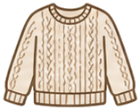
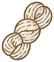
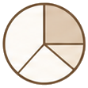

SUCH TROUBLES
こんなお悩み、ありませんか？
何玉買えば足りるのか分からない
途中で毛糸が足りなくなった
材料費がいくらか先に知りたい
ゲージの取り方がよく分からない

糸の太さで使う量が変わるか不安
何玉買えば足りるのか分からない
途中で毛糸が足りなくなった
材料費がいくらか先に知りたい
ゲージの取り方がよく分からない

糸の太さで使う量が変わるか不安
編み物に必要な数字を、入力するだけでまとめて自動計算します。
作品サイズと糸の太さから、必要なメートル数・グラム数を瞬時に算出します。

1玉あたりの長さから、買うべき玉数を切り上げで自動表示。買い足し失敗を防ぎます。
毛糸の単価を入力すれば、作品にかかる材料費の概算もその場で算出できます。

レース糸から極太まで、毛糸の太さごとの必要量をグラフで一目で比較できます。
マフラー・帽子・セーターなど、作品ごとの目安サイズをワンタップで呼び出せます。
登録不要・インストール不要。スマホでもPCでも、いつでも何度でも無料で使えます。
むずかしい操作は不要。3分で必要な毛糸量が分かります。
作りたい作品の幅と長さ（cm）を入力します。プリセットを選ぶだけでもOK。
使う毛糸の太さ（ウェイト）と編み方を選択します。ラベルを見て選べます。
「今すぐ計算」ボタンを押すだけ。必要量・玉数・材料費がすぐに表示されます。
結果をもとに毛糸を購入。履歴保存・コピー・CSV出力にも対応しています。
毛糸の太さの目安と、正確な計算に欠かせないゲージの測り方をやさしく解説。
| 太さ（ウェイト） | 主な用途 | 1玉の目安 |
|---|---|---|
| レース糸（極細） | 繊細な模様編み | 約400m |
| フィンガリング（細） | 靴下・手袋 | 約200m |
| DK（合太） | 初心者向け全般 | 約100m |
| ワーステッド（並太） | セーター・小物 | 約100m |
| バルキー（極太） | マフラー・帽子 | 約50m |
※ 太い糸ほど早く編めて初心者向き。同じ作品でも糸が細いほど必要な玉数は増えます。
試し編みをする
本番と同じ糸・針で10cm四方より大きめに編みます。
10cmの目数・段数を数える
定規をあてて、10cmに入る目数と段数を数えます。
計算ツールに反映
測ったゲージをもとに、必要な毛糸量を正確に算出します。
作りたい作品をタップすると、目安サイズが入力欄に自動でセットされます。
登録もインストールも不要。何度でも無料でご利用いただけます。
入力して押すだけ。面倒な手計算から解放されます。
手芸店でその場で確認。プライバシーも安心の端末内処理。
ゲージ解説・作品別テンプレートなどガイドが充実。
はい、完全無料・登録不要でご利用いただけます。回数制限もありません。スマートフォン・タブレット・PCすべてに対応しています。
ゲージ（編み目の密度）を基に算出した参考値です。実際の消費量は個人の編み具合（手加減）で±20%程度変わる場合があるため、1〜2玉多めの購入をおすすめします。
すべての処理はブラウザ内で完結し、入力内容が外部サーバーに送信されることはありません。計算履歴はお使いの端末内にのみ保存されます。
はい。毛糸の単価（円/100m）を入力すると、作品にかかる材料費の概算を自動で算出します。予算の目安づくりにご活用ください。
もちろんです。作品別テンプレートやゲージの取り方ガイドを用意しているので、はじめての方でも迷わず必要な毛糸量を計算できます。